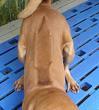

Chó Phú Quốc là một loại chó riêng của đảo Phú Quốc, Việt Nam. Nó có đặc điểm phân biệt với các loại chó khác là các xoáy lông ở trên sống lưng. Nó là một trong ba dòng chó có xoáy lông trên lưng trên thế giới. Hai loại chó lông xoáy ở lưng còn lại là chó lông xoáy Rhodesia và chó lông xoáy Thái. Chó Phú Quốc đã có tên trong từ điển tiếng Pháp, Larousse
Nguồn gốc của chó Phú Quốc hiện nay chưa xác định. Theo một số người, chó lông xoáy Phú Quốc được bắt đầu từ một giống chó lông xoáy của Pháp khi lạc trên hoang đảo Phú Quốc và giống chó này đã sinh sôi nảy nở ở đây thành một loại chó hoang. Theo một nguồn quảng cáo cho chó lông xoáy Thái,có vài lập luận để thuyết minh rằng chó Phú Quốc đến từ Thái Lan. Tuy nhiên các luận cứ này đều cần chưa đáng tin cậy và thiếu tính thuyết phục vì tính chính xác của nó.
Ngày 14 tháng 12 năm 2008, Hiệp hội Chó giống quốc gia Việt Nam (VKC) đã chính thức đăng ký giống chó Phú Quốc với Hiệp hội Chó giống quốc tế để được thế giới công nhận
Giống Chó Phú Quốc có đặc điểm dễ phân biệt như lưng vòng xoáy chạy từ vai đến xương hông, dáng dũng mãnh và được nhiều người tìm kiếm, đưa về nuôi.[7] Chúng có nhiều biệt tài so với các loài chó khác. Quân đội nhà Nguyễn đã dùng chó Phú Quốc làm quân khuyển vì chó Phú Quốc khi xác định được lãnh địa thì làm chủ hoàn toàn lãnh địa của mình. Không có bất cứ một người lạ, vật lạ nào rơi vào phạm vi lãnh địa của chúng mà chúng không phát hiện
Theo những cư dân lâu năm của Phú Quốc, chó Phú Quốc thuần chủng có vòng xoáy trên lưng với bốn màu cơ bản: đốm, đen, vàng và vện (sọc); tuy nhiên ngày nay màu lông đã có nhiều sự lai tạp. Chó Phú Quốc trưởng thành nặng khoảng 20–25 kg với một cái đầu nhỏ, cổ dài, mỏm dài, tai dài, mỏng và có những chấm trên lưỡi. Chó Phú Quốc biết đào hang để đẻ và có biệt tài săn thú, bơi dưới nước giỏi như rái cá nhờ chân có màng như chân vịt và bộ lông mượt sát (1–2 cm) rất ngắn nên khi ướt chó Phú Quốc chỉ cần lắc mình vài lượt là nước sẽ bắn đi, do đó lông sẽ nhanh khô.
Chó Phú Quốc là giống chó săn rất giỏi, chúng khi đã truy tìm thì tra đến cùng dấu vết con mồi cũng như rất ít khi bỏ cuộc.[2] Đây là giống chó rất trung thành và thông minh, chúng tuân thủ mệnh lệnh một cách chính xác mà không tốn nhiều công huấn luyện. Một điểm khá đặ̣c biệt là chó Phú Quốc không ăn những thức ăn "nhân tạo" (do một người khác làm hoặc không phải của chủ nó cho ăn) nên rất chúng thường khó bị mắc bẫy hoặc bị dùng thuốc độc tiêu diệt.